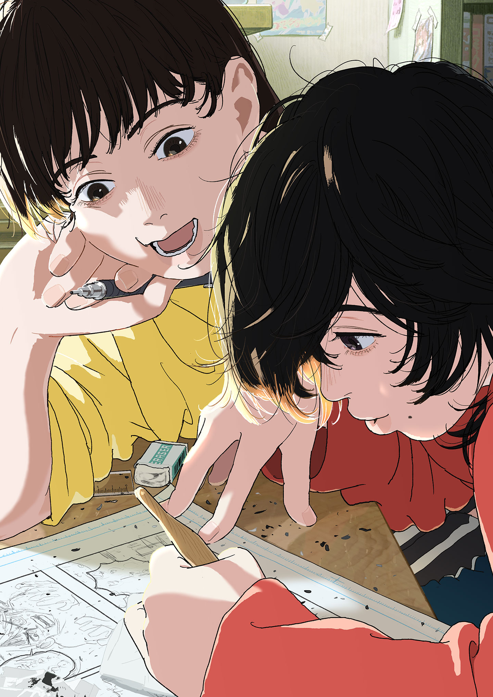
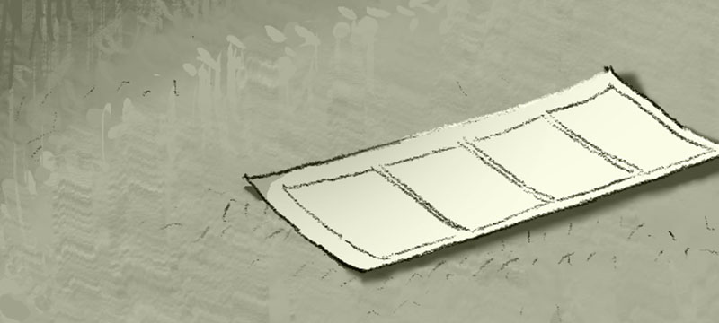
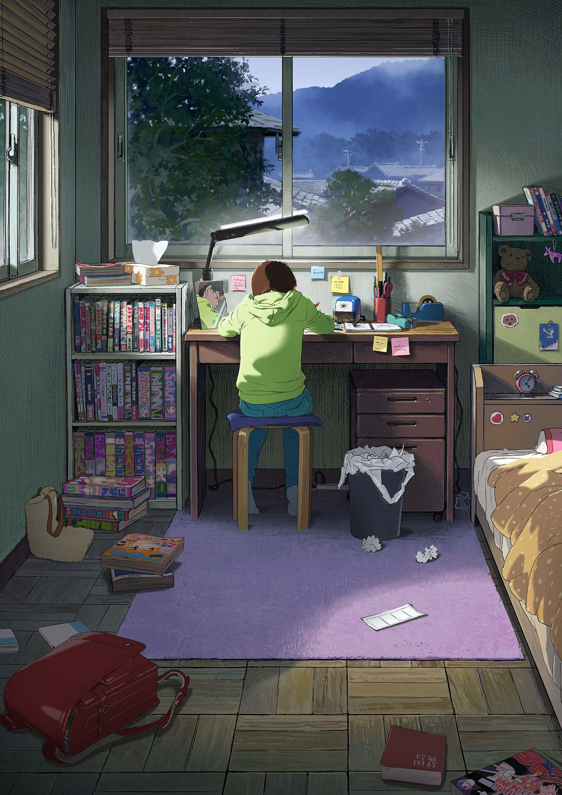
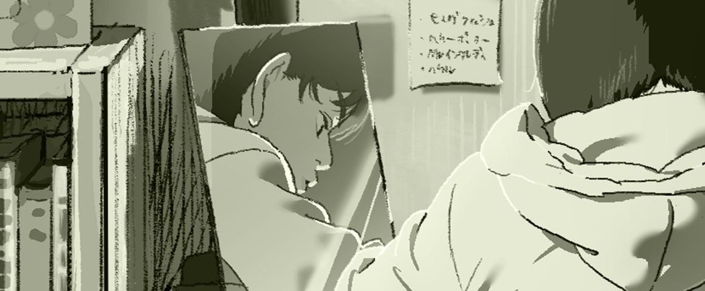

藤野FUJINO
配音 · 河合优实自信、好强，把漫画画进校报的四格里。她在意别人的目光，也会为了心中的那一点不服输，一遍遍回到画桌前。

有些相遇，
会留在往后的
每一笔里。

01THE STORY / 故事
藤野喜欢画漫画，也习惯了同学们的赞美。直到校报上出现京本的作品，她第一次发现，自己引以为傲的画笔，也会遇到难以追上的背影。
一个想被看见，一个习惯躲在房间里。一次送毕业证书的相遇，让原本隔着纸张的两个人，开始并肩画下新的故事。
无剧透导读 · 把余下的故事留给电影

02TWO LIVES / 人物
在彼此的画里，
看见一个更辽阔的世界。
自信、好强，把漫画画进校报的四格里。她在意别人的目光，也会为了心中的那一点不服输，一遍遍回到画桌前。
安静、内向，擅长细腻的背景绘画。房间是她熟悉的世界，而藤野的漫画，是她一直珍藏在心里的另一扇窗。

BEHIND THE LINES
铅笔划过纸面，光线掠过房间。
那些看似平常的瞬间，构成了这部电影的温度。
03THE CREATORS / 创作